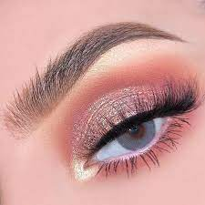
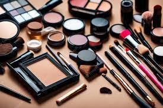
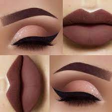
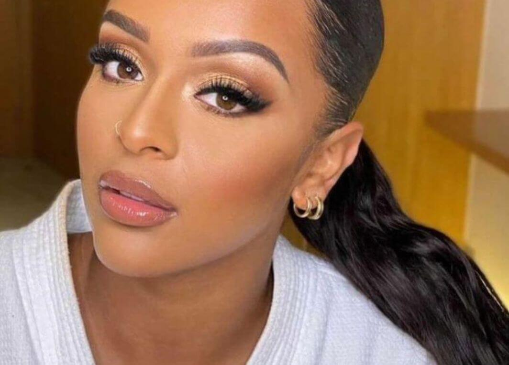

Dicas de como se maquiar e espiração para maquiaguem, Aqui você nunca vai sair desarrumada você vai sair como uma diva, você vão aprender passo a passo de como se maquiar se já saberem vão ter as melhores espiraçãos para maquiaguens perfeitas e também saberem quais são os melhores produtos para usarem aqui comigo O segredo de qualquer maquiagem incrível é uma pele bem feita. Pode ter certeza que sim! É nessa fase que você consegue definir bem os seus traços, ressaltar pontos chaves do rosto e minimizar as imperfeições. Fique ligada no passo a passo para conseguir uma pele de seda e arrasar no carão!
Tipos de produtos para uma maquiaguem simpre
1-Praime: é um produto para idratar a pele antaes de passa a maquiaguem, tem varios tipos de praime ex:
2-Base: esse produto é muito importante na hora da maquiagem que é um dos principais para se maquiar
3-corretivo: é um produto que muito importante pare a maquiaguem
4-Pó facial: é o produto para deixar sua base mais seca
5-Blush e iluminador: são produtinhos que vai dar uma certa diferença na sua maquiagem
6-Paleta de sombras: a paleta já é mais avaçado, para maquiagem mais chamativas
7-Máscara de cílios: é um produto muito usasado, máscara de cílios é um produto de maquiagem usado para realçar, curvar, alongar, dar volume
8-Lapis para sobrancelhas: o lapis e um produto bom para quem não tem muita sombraselha porque com ele você vai desenhar sua sobrancelhas do geito que deseijar
   